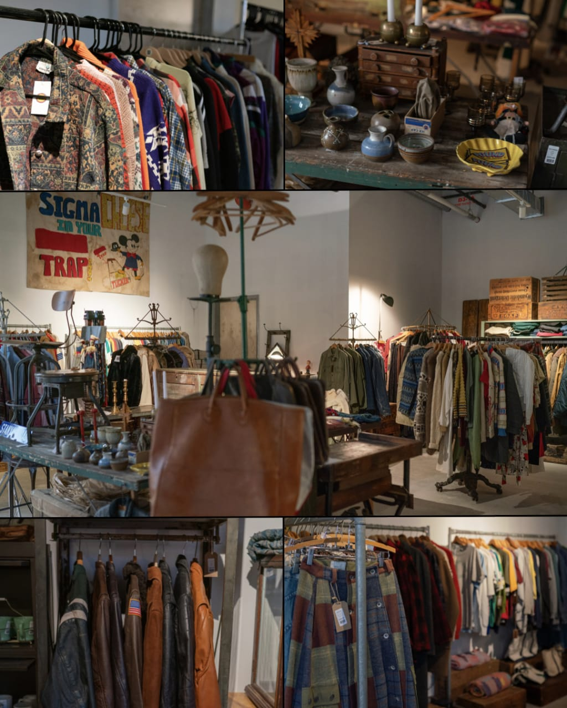

Why Choose Sustainable Fashion?
The Environmental Impact of Fast Fashion
The fashion industry is one of the most environmentally destructive sectors in the world, and understanding its impact has fundamentally changed how I approach clothing consumption.
The environmental costs are extensive: textile production requires massive amounts of water, releases harmful chemicals into waterways, and contributes significantly to greenhouse gas emissions. Synthetic fabrics shed microplastics that pollute our oceans. By choosing to thrift, we stop this destructive cycle, extending the life of existing garments and reducing demand for new production.
Thrifting represents a practical, accessible form of environmental activism.
My Top Reasons to Thrift
- Environmental Protection
- Unique Style
- Budget-Friendly
- Quality Over Quantity
- Community Support
- Treasure Hunting Experience
- Reduced Carbon Footprint
- Fighting Fast Fashion
- Creative Expression
- Learn Fashion History
Getting Started with Thrifting
If you're new to thrifting, look for local thrift stores in your area or look online: Depop, Etsy, Vinted, etc.
When you visit, give yourself plenty of time to browse thoroughly; rushing through a thrift store means missing hidden gems. Go with an open mind rather than searching for specific items; some of my best finds were pieces I never knew I wanted.